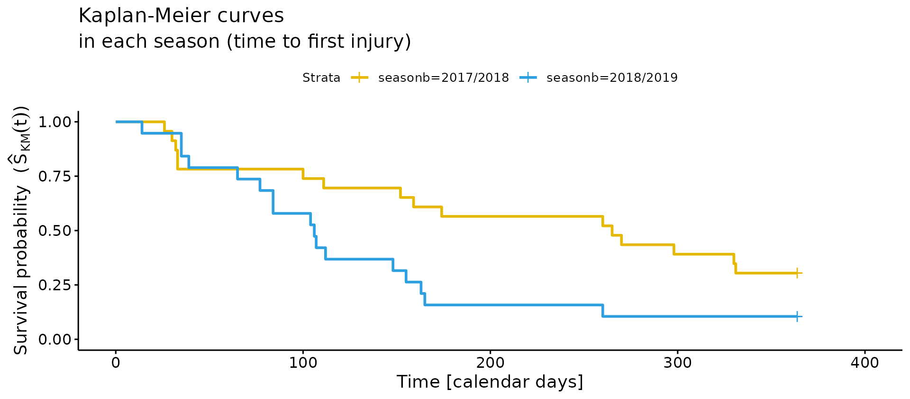
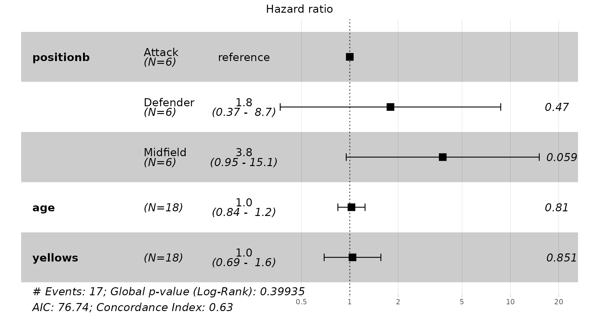
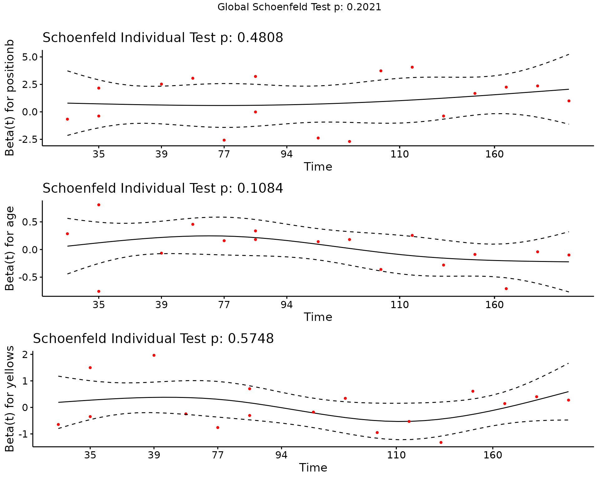

Model Sports Injuries as Events
2023-09-25
Source:vignettes/model-injury-data-ii.Rmd
model-injury-data-ii.Rmd
library(injurytools)
library(dplyr)
library(stringr)
library(survival)
library(survminer)
library(coxme)
library(ggplot2)
library(gridExtra)Example data: we continue exploring the cohort of Liverpool Football Club male’s first team players over two consecutive seasons, 2017-2018 and 2018-2019, scrapped from https://www.transfermarkt.com/ website1.
This document presents basic examples for modeling the association between covariates and injuries using Survival Analysis, or Time-to-Event Analysis, models. Depending on the aim of the analyses, it illustrates possible survival models, as well as how to prepare the data, what model assumptions are made on the data, how to fit them and how to display the estimated results.
Brief background
This approach is possible when players are followed over the course of time, since we consider injuries as time-to-event outcome variables.
Broadly speaking, we define the outcome variable, \(T\), as “the time until the occurrence of an injury (event)”. Then, data analysis is regularly performed before or without knowing all injury event times (e.g. a study might be finished with players not experiencing the injury or players may drop out of the study), which leads to incomplete observations known as censoring (i.e. we observe \(Y = \min(T, C)\), where \(C\) is the censorship variable).
In the following two sections, we first show the application of the well-known Kaplan-Meier method and Cox Proportional Hazards (Cox PH) model on sports injury data and after that, we describe two possible survival modelling strategies that take into account the recurrence of injuries (repeated observations per player).
Methods for time to first injury
We prepare the data so that for each separate season we have an
injd object with each observation (row) corresponding to
time to first injury (or end of the season, or a
transfer to another team, i.e. censored observation).
The final data frames are called injd1718_sub and
injd1819_sub.
See the code to prepare the data
## 17/18
df_exposures1718 <- prepare_exp(df_exposures0 =
raw_df_exposures |> filter(season == "17/18"),
player = "player_name",
date = "year",
time_expo = "minutes_played") |>
mutate(seasonb = date2season(date))
df_injuries1718 <- prepare_inj(df_injuries0 =
raw_df_injuries |> filter(season == "17/18"),
player = "player_name",
date_injured = "from",
date_recovered = "until")
injd1718 <- prepare_all(data_exposures = df_exposures1718,
data_injuries = df_injuries1718,
exp_unit = "matches_minutes")
injd1718 <- injd1718 |>
mutate(seasonb = date2season(tstart)) |>
## join to have info such as position, age, citizenship etc.
left_join(df_exposures1718, by = c("player" = "player",
"seasonb" = "seasonb"))
## create injd1718_sub:
## - time to first injury
## - equivalent tstart and tstop in calendar days
injd1718_sub <- injd1718 |>
mutate(tstop_day = as.numeric(difftime(tstop, tstart, units = "days"))) %>%
group_by(player) |> ## important
mutate(tstop_day = cumsum(tstop_day),
tstart_day = lag(tstop_day, default = 0)) |>
ungroup() |>
dplyr::select(player:tstop_minPlay, tstart_day, tstop_day, everything()) |>
filter(enum == 1) ## time to first injury
## 18/19
df_exposures1819 <- prepare_exp(df_exposures0 =
raw_df_exposures |> filter(season == "18/19"),
player = "player_name",
date = "year",
time_expo = "minutes_played") |>
mutate(seasonb = date2season(date))
df_injuries1819 <- prepare_inj(df_injuries0 =
raw_df_injuries |> filter(season == "18/19"),
player = "player_name",
date_injured = "from",
date_recovered = "until")
injd1819 <- prepare_all(data_exposures = df_exposures1819,
data_injuries = df_injuries1819,
exp_unit = "matches_minutes")
injd1819 <- injd1819 |>
mutate(seasonb = date2season(tstart)) |>
## join to have info such as position, age, citizenship etc.
left_join(df_exposures1819, by = c("player" = "player",
"seasonb" = "seasonb"))
## create injd1819_sub:
## - time to first injury
## - equivalent tstart and tstop in calendar days
injd1819_sub <- injd1819 |>
mutate(tstop_day = as.numeric(difftime(tstop, tstart, units = "days"))) %>%
group_by(player) |> ## important
mutate(tstop_day = cumsum(tstop_day),
tstart_day = lag(tstop_day, default = 0)) |>
ungroup() |>
dplyr::select(player:tstop_minPlay, tstart_day, tstop_day, everything()) |>
filter(enum == 1) ## time to first injuryKaplan-Meier curve
For this section we join both data sets by row:
injd_sub <- bind_rows("17-18" = injd1718_sub,
"18-19" = injd1819_sub,
.id = "season")Now, we estimate the survival probabilities, \(\hat{S}_{\text{KM}}(t)\), in each season, as follows:
fit
#> Call: survfit(formula = Surv(tstart_day, tstop_day, status) ~ seasonb,
#> data = injd_sub)
#>
#> n events median 0.95LCL 0.95UCL
#> seasonb=2017/2018 23 16 265 152 NA
#> seasonb=2018/2019 19 17 106 84 165The number of first-time injuries in both seasons is similar (16 vs. 17), but the median survival probability is lower in the 2018/2019 season, i.e. in 2018/2019 the estimated probability of being injury free by 106-th day or before is 50% (equivalently, the estimated probability of surviving 106 days (three months and a half) is 50%), whereas in 2017/2019 the probability of surviving the same time is 69.57%.
Next, we plot the Kaplan-Meier (KM) curves for each season based on
the above results via the survminer::ggsurvplot
function:
ggsurvplot(fit, data = injd_sub,
palette = c("#E7B800", "#2E9FDF")) + ## colors for the curves
xlab("Time (calendar days)") +
ylab(expression("Survival probability ("*hat(S)[KM](t)*")")) +
ggtitle("Kaplan-Meier curves",
subtitle = "in each season (time to first injury)") 
Let’s add more information to the previous plot, such as the estimated median survival probability.
Code for adding more info to the previous plot
## since tstop_day == (tstop_day - tstart_day)
all(injd_sub$tstop_day == (injd_sub$tstop_day - injd_sub$tstart_day))
# [1] TRUE
## equivalent fits:
fit <- survfit(Surv(tstart_day, tstop_day, status) ~ seasonb, data = injd_sub)
fit <- survfit(Surv(tstop_day, status) ~ seasonb, data = injd_sub)
ggsurv <- ggsurvplot(fit, data = injd_sub,
palette = c("#E7B800", "#2E9FDF"),
surv.median.line = "hv",
ggtheme = theme_bw(),
break.time.by = 60,
xlim = c(0, 370),
legend.labs = c("Season 17/18", "Season 18/19")) +
xlab("Time (calendar days)") +
ylab(expression("Survival probability ("*hat(S)[KM](t)*")")) +
ggtitle("Kaplan-Meier curves",
subtitle = "in each season (time to first injury)")
# add median survival estimates
ggsurv$plot <- ggsurv$plot +
annotate("text",
x = 70, y = 0.4,
label = expression(hat(S)[18/19]*"(106)=0.5"),
col = "#2E9FDF") +
annotate("text",
x = 230, y = 0.4,
label = expression(hat(S)[17/18]*"(265)=0.5"),
col = "#E7B800")
ggsurv$plot <- ggsurv$plot +
theme(plot.title = element_text(size = rel(1.5)),
plot.subtitle = element_text(size = rel(1.5)),
axis.title = element_text(size = rel(1.3)),
axis.text = element_text(size = rel(1.3)),
legend.title = element_blank(),
legend.text = element_text(size = rel(1.2)))
ggsurv
Finally, to add a risk table below the graph, plus the p-value obtained from the log-rank test (which tests the difference between the survival probabilities of 17/18 and 18/19 season), we do the following.
Code for adding for info to the previous plot
ggsurv <- ggsurvplot(fit, data = injd_sub,
palette = c("#E7B800", "#2E9FDF"),
risk.table = T,
conf.int = T,
pval = T,
surv.median.line = "hv",
risk.table.col = "strata",
ggtheme = theme_bw(),
break.time.by = 60,
xlim = c(0, 370),
legend.labs = c("Season 17/18", "Season 18/19"),
legend.title = "") +
xlab("Time (calendar days)") +
ylab(expression("Survival probability ("*hat(S)[KM](t)*")")) +
ggtitle("Kaplan-Meier curves",
subtitle = "in each season (time to first injury)")
# add median survival estimates
ggsurv$plot <- ggsurv$plot +
annotate("text",
x = 70, y = 0.4,
label = expression(hat(S)[18/19]*"(106)=0.5"),
col = "#2E9FDF") +
annotate("text",
x = 230, y = 0.4,
label = expression(hat(S)[17/18]*"(265)=0.5"),
col = "#E7B800")
# quit title and y text of the risk table
ggsurv$table <- ggsurv$table +
ggtitle("Number of players at risk") +
theme(plot.subtitle = element_blank(),
axis.title.y = element_blank(),
plot.title = element_text(size = rel(1.5)),
axis.title.x = element_text(size = rel(1.3)),
axis.text = element_text(size = rel(1.3)))
ggsurv$plot <- ggsurv$plot +
theme(plot.title = element_text(size = rel(1.5)),
plot.subtitle = element_text(size = rel(1.5)),
axis.title = element_text(size = rel(1.3)),
axis.text = element_text(size = rel(1.3)),
legend.title = element_blank(),
legend.text = element_text(size = rel(1.2)))
ggsurvThere are statistical differences regarding the survival probabilities of first-time injuries between both seasons.
Cox PH model
We can fit a Cox PH model which relates the covariates (\(\boldsymbol{x}\)) to the injury outcome through the hazard function as \(\lambda(t | \boldsymbol{x}) = \lambda_0(t)\exp(\boldsymbol{x}'\boldsymbol{\beta})\).
We use injd1819_sub data in this section and we add to
it another variable (i.e. positionb).
## create positionb column
## (so that the categories are: Attack, Defender, Goalkeeper and Midfield)
injd1819_sub <- mutate(injd1819_sub,
positionb = factor(str_split_i(position, "_", 1)))Now, we fit a Cox PH model with three covariates: player position (excluding goalkeepers), age and yellow cards received by each player during the 18/19 season.
cfit <- coxph(Surv(tstop_day, status) ~ positionb + age + yellows,
data = injd1819_sub |>
filter(positionb != "Goalkeeper") |> droplevels())The estimated effects of the cfit model are:
summary(cfit)
#> Call:
#> coxph(formula = Surv(tstop_day, status) ~ positionb + age + yellows,
#> data = droplevels(filter(injd1819_sub, positionb != "Goalkeeper")))
#>
#> n= 18, number of events= 17
#>
#> coef exp(coef) se(coef) z Pr(>|z|)
#> positionbDefender 0.58324 1.79183 0.80661 0.723 0.4696
#> positionbMidfield 1.33266 3.79112 0.70604 1.888 0.0591 .
#> age 0.02391 1.02419 0.09937 0.241 0.8099
#> yellows 0.03909 1.03986 0.20752 0.188 0.8506
#> ---
#> Signif. codes: 0 '***' 0.001 '**' 0.01 '*' 0.05 '.' 0.1 ' ' 1
#>
#> exp(coef) exp(-coef) lower .95 upper .95
#> positionbDefender 1.792 0.5581 0.3687 8.707
#> positionbMidfield 3.791 0.2638 0.9501 15.127
#> age 1.024 0.9764 0.8429 1.244
#> yellows 1.040 0.9617 0.6924 1.562
#>
#> Concordance= 0.629 (se = 0.072 )
#> Likelihood ratio test= 4.05 on 4 df, p=0.4
#> Wald test = 3.88 on 4 df, p=0.4
#> Score (logrank) test = 4.27 on 4 df, p=0.4The results are not very meaningful nor interesting, probably due to the small sample size of the data.
The above summary can be displayed graphically (the hazard ratios and 95% confidence intervals, together with the p-values of each covariate, and further information about the goodness of fit of the model) as:
ggforest(model = cfit,
data = injd1819_sub |>
filter(positionb != "Goalkeeper") |> as.data.frame(),
fontsize = 1.2)
Then, we can check if the proportional hazards assumption for the Cox PH model is hold by computing the Schoenfeld residuals:
cox.zph(cfit)
#> chisq df p
#> positionb 1.465 2 0.48
#> age 2.578 1 0.11
#> yellows 0.315 1 0.57
#> GLOBAL 5.961 4 0.20The PH assumption is violated as seen in the above output (GLOBAL p-value).
Let’s check the residuals for each covariate in the model graphically:

Models for time to (subsequent) injuries
The following models are useful to account for heterogeneity among different observations or group of subjects.
Stratified Cox PH model
To fit a stratified Cox PH model, we use the (previously prepared)
injd_sub data, where the seasonb column has
two levels. With this model we fit a different baseline hazard function
for each level (stratum) of the seasonb covariate (strata),
i.e. \(\lambda(t | \boldsymbol{x}) =
\lambda_{0,k}(t)\exp(\boldsymbol{x}'\boldsymbol{\beta})\) for
\(k = 1, 2\).
summary(sfit)
#> Call:
#> coxph(formula = Surv(tstart_day, tstop_day, status) ~ age + strata(seasonb),
#> data = injd_sub)
#>
#> n= 42, number of events= 33
#>
#> coef exp(coef) se(coef) z Pr(>|z|)
#> age 0.01749 1.01764 0.05541 0.316 0.752
#>
#> exp(coef) exp(-coef) lower .95 upper .95
#> age 1.018 0.9827 0.9129 1.134
#>
#> Concordance= 0.6 (se = 0.069 )
#> Likelihood ratio test= 0.1 on 1 df, p=0.8
#> Wald test = 0.1 on 1 df, p=0.8
#> Score (logrank) test = 0.1 on 1 df, p=0.8The effect of age, \(\widehat{\text{HR}}_{\text{age}} = \exp(\hat{\beta}_{\text{age}}) = 1.02\), is not significant. However, we will keep on and illustrate how to plot the estimates of two players of different ages, 18 year-old vs. 36 year-old in both seasons, based on the fitted stratified model.
First, we put the wanted estimates in a data frame.
## surv estimates of a player of 18 year-old based on sfit
player1 <- data.frame(age = 18)
sfitn1 <- survfit(sfit, newdata = player1)
sfitn1 <- data.frame(surv = sfitn1$surv,
time = sfitn1$time,
strata = c(rep(names(sfitn1$strata)[[1]], sfitn1$strata[[1]]),
rep(names(sfitn1$strata)[[2]], sfitn1$strata[[2]])),
age = 18)
## surv estimates of a player of 36 year-old based on sfit
player2 <- data.frame(age = 36)
sfitn2 <- survfit(sfit, newdata = player2)
sfitn2 <- data.frame(surv = sfitn2$surv,
time = sfitn2$time,
strata = c(rep(names(sfitn2$strata)[[1]], sfitn2$strata[[1]]),
rep(names(sfitn2$strata)[[2]], sfitn2$strata[[2]])),
age = 36)
## bind both data frames
sfitn <- bind_rows(sfitn1, sfitn2) |>
mutate(strata = factor(strata),
Age = factor(age))Then, we plot them:
ggplot(sfitn, aes(x = time, y = surv, col = strata)) +
geom_step(aes(linetype = Age)) +
scale_color_manual(name = "Season", values = c("#E7B800", "#2E9FDF")) +
xlab("t [calendar days]") + ylab(expression(hat(S)(t))) +
theme(legend.title = element_text(size = rel(1.3)),
legend.text = element_text(size = rel(1.3)),
axis.text = element_text(size = rel(1.4)),
axis.title = element_text(size = rel(1.4)))But the proportional hazard assumption for each strata doesn’t hold:
cox.zph(sfit)
#> chisq df p
#> age 6 1 0.014
#> GLOBAL 6 1 0.014Shared frailty model
Shared frailty models allow to model the dependence between several survival times through a frailty term that is shared by all the survival times pertaining to a player or, in general, to a cluster. This way, survival times of a player that sustains multiple injuries have the same level of frailty attached to them. It is expressed as \(\lambda(t | \boldsymbol{x}, \alpha) = \lambda_{0}(t)\exp(\boldsymbol{x}'\boldsymbol{\beta})\alpha_l = \lambda_{0}(t)\exp(\boldsymbol{x}'\boldsymbol{\beta} + b_l)\) for \(l = 1, \ldots, L\) players, where \(\alpha = \exp(b)\) usually follows a Gamma or log-normal distribution.
Code to prepare the data
## prepare exposure data set and create seasonb column
df_exposures <- prepare_exp(df_exposures0 = raw_df_exposures,
player = "player_name",
date = "year",
time_expo = "minutes_played") |>
mutate(seasonb = date2season(date))
## add more info to injd data frame (based on exposure data)
injd <- injd |>
mutate(seasonb = date2season(tstart)) |>
left_join(df_exposures, by = c("player" = "player",
"seasonb" = "seasonb")) |>
mutate(positionb = factor(str_split_i(position, "_", 1)),
injury_severity = addNA(injury_severity),
days_lost = lag(days_lost, default = 0),
games_lost = lag(games_lost, default = 0),
prev_inj = lag(enum, default = 0))Code to do some more data set-up:
injd <- injd |>
mutate(tstop_minPlay = ifelse(tstop_minPlay == tstart_minPlay,
tstop_minPlay + 1, tstop_minPlay)) |>
filter(positionb != "Goalkeeper") |>
droplevels()Now, we fit a shared frailty model in which the frailty term follows
a Gamma distribution using the frailty(player) syntax
inside survival::coxph function’s formula:
sffit <- coxph(Surv(tstart_minPlay, tstop_minPlay, status) ~
age + days_lost +
frailty(player, distribution = "gamma"), data = injd)Or alternatively, we can use the coxme package (there
are more packages also) and fit a model with a log-normal frailty using
the (1 | player) syntax:
sffit2 <- coxme(Surv(tstart_minPlay, tstop_minPlay, status) ~
age + days_lost + (1 | player), data = injd)This model is also called a random intercepts model, since the frailty term acts in a multiplicative way on the hazard (or the “intercept” of the curve).
summary(sffit)
#> Call:
#> coxph(formula = Surv(tstart_minPlay, tstop_minPlay, status) ~
#> age + days_lost + frailty(player, distribution = "gamma"),
#> data = injd)
#>
#> n= 104, number of events= 81
#>
#> coef se(coef) se2 Chisq DF p
#> age 0.489503 0.278965 3.08 1.00 7.9e-02
#> days_lost -0.006381 0.009761 0.006744 0.43 1.00 5.1e-01
#> frailty(player, distribut 230.57 15.72 3.3e-40
#>
#> exp(coef) exp(-coef) lower .95 upper .95
#> age 1.6315 0.6129 0.9443 2.819
#> days_lost 0.9936 1.0064 0.9748 1.013
#>
#> Iterations: 10 outer, 184 Newton-Raphson
#> Variance of random effect= 2.673384 I-likelihood = -171.4
#> Degrees of freedom for terms= -2.3 0.5 15.7
#> Concordance= 0.882 (se = 0.026 )
#> Likelihood ratio test= 122.5 on 13.88 df, p=<2e-16The estimated variance of the random effect is $^2 = $ 2.691371 and the p-value of the frailty term is significant.
summary(sffit2)
#> Cox mixed-effects model fit by maximum likelihood
#> Data: injd
#> events, n = 81, 104
#> Iterations= 21 111
#> NULL Integrated Fitted
#> Log-likelihood -190.7449 -164.8804 -122.959
#>
#> Chisq df p AIC BIC
#> Integrated loglik 51.73 3.00 3.4212e-11 45.73 38.55
#> Penalized loglik 135.57 21.69 0.0000e+00 92.20 40.27
#>
#> Model: Surv(tstart_minPlay, tstop_minPlay, status) ~ age + days_lost + (1 | player)
#> Fixed coefficients
#> coef exp(coef) se(coef) z p
#> age 0.52986625 1.6987051 0.22283770 2.38 0.017
#> days_lost -0.01228762 0.9877876 0.01001641 -1.23 0.220
#>
#> Random effects
#> Group Variable Std Dev Variance
#> player Intercept 3.472957 12.061429Let’s plot the covariate effects, i.e hazard ratios, and the frailty
terms of the sffit model:
## plot p1, for covariate effects
## a trick to not to plot frailties as HRs
sffit_aux <- sffit
attr(sffit_aux$terms, "dataClasses") <-
attr(sffit_aux$terms, "dataClasses")[1:3]
p1 <- ggforest(sffit_aux, data = injd,
fontsize = 0.8)
## plot p2, for frailty terms
df_frailties <- data.frame(player = levels(injd$player),
frail = sffit$frail,
expfrail = exp(sffit$frail),
col = factor(ifelse(sffit$frail >= 0, 1, 0)))
p2 <- ggplot(df_frailties) +
geom_segment(aes(x = player, xend = player,
y = 1, yend = expfrail, col = col)) +
geom_hline(yintercept = 1) +
geom_text(aes(x = player, y = expfrail + 0.12*sign(frail), label = player),
size = 3, angle = 30) +
scale_color_manual(name = "", values = c("darkred", "dodgerblue"))Code for further plot specifications
df_frailties <- data.frame(player = levels(injd$player),
frail = sffit$frail,
expfrail = exp(sffit$frail),
col = factor(ifelse(sffit$frail >= 0, 1, 0)))
p2 <- ggplot(df_frailties) +
geom_segment(aes(x = player, xend = player,
y = 1, yend = expfrail, col = col)) +
geom_hline(yintercept = 1) +
geom_text(aes(x = player, y = expfrail + 0.12*sign(frail), label = player),
size = 3, angle = 15) +
scale_color_manual(name = "", values = c("darkred", "dodgerblue")) +
scale_x_discrete(expand = c(0.08, 0)) +
scale_y_continuous(expand = c(0.2, 0)) +
ylab(expression(exp*"(frail)")) + xlab("Player") +
ggtitle("Frailties") +
theme(legend.position = "none",
axis.ticks.x = element_blank(),
axis.text.x = element_blank(),
axis.title = element_text(size = rel(1.2)),
axis.text.y = element_text(size = rel(1.2)),
plot.title = element_text(size = rel(1.4), hjust = 0.5))
grid.arrange(p1, p2, nrow = 2, heights = c(1, 1.3))The models in this section might be extended to model data that present different cluster structures or hierarchical levels, e.g. players in the same team, club, league etc.